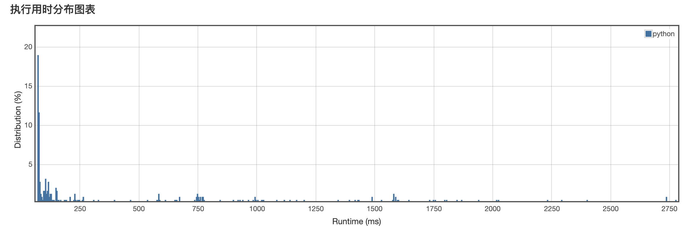
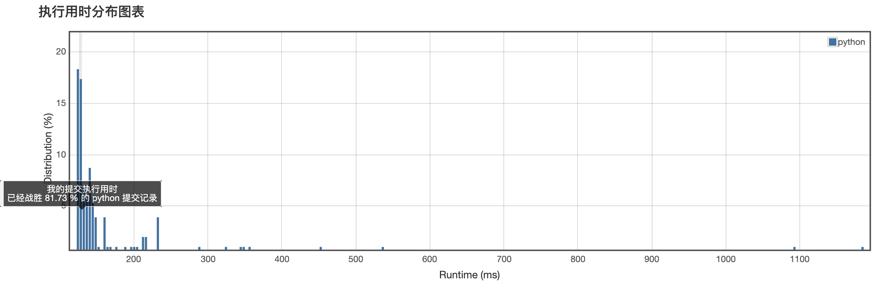
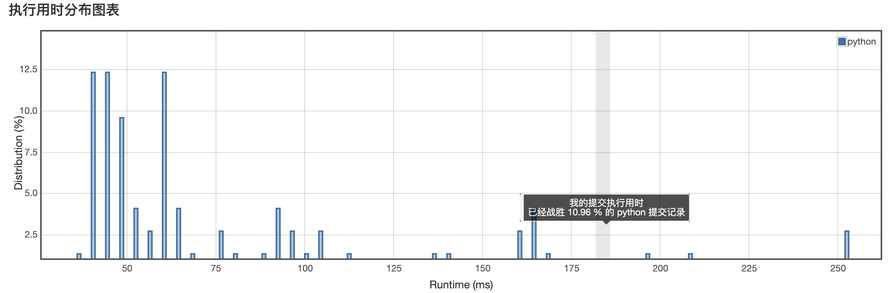

<!DOCTYPE html>
<html>
<head><meta name="generator" content="Hexo 3.8.0">
  <meta charset="utf-8">
  
  <title>Aloha | Gaga酱的奇思妙想</title>
  <meta name="viewport" content="width=device-width, initial-scale=1, maximum-scale=1">
  
    <meta name="keywords" content="萌萌の嘎嘎">
  
  
  
  
  <meta name="description" content="纸上得来终觉浅,绝知此事要躬行">
<meta name="keywords" content="leetcode,python">
<meta property="og:type" content="article">
<meta property="og:title" content="小李飞刀：刷题第十三弹！">
<meta property="og:url" content="http://yoursite.com/2019/04/23/小李飞刀：刷题第十三弹！/index.html">
<meta property="og:site_name" content="Gaga酱の奇思妙想">
<meta property="og:description" content="纸上得来终觉浅,绝知此事要躬行">
<meta property="og:locale" content="zh-Hans">
<meta property="og:image" content="http://yoursite.com/2019/04/23/小李飞刀：刷题第十三弹！/1.png">
<meta property="og:image" content="http://yoursite.com/2019/04/23/小李飞刀：刷题第十三弹！/2.png">
<meta property="og:image" content="http://yoursite.com/2019/04/23/小李飞刀：刷题第十三弹！/3.png">
<meta property="og:updated_time" content="2019-04-24T04:31:36.018Z">
<meta name="twitter:card" content="summary">
<meta name="twitter:title" content="小李飞刀：刷题第十三弹！">
<meta name="twitter:description" content="纸上得来终觉浅,绝知此事要躬行">
<meta name="twitter:image" content="http://yoursite.com/2019/04/23/小李飞刀：刷题第十三弹！/1.png">
  
  <link rel="icon" href="/css/images/favicon.png">
  
    <link href="//fonts.googleapis.com/css?family=Source+Code+Pro" rel="stylesheet" type="text/css">
  
  <link href="https://fonts.googleapis.com/css?family=Open+Sans|Montserrat:700" rel="stylesheet" type="text/css">
  <link href="https://fonts.googleapis.com/css?family=Roboto:400,300,300italic,400italic" rel="stylesheet" type="text/css">
  <link href="//cdn.bootcss.com/font-awesome/4.6.3/css/font-awesome.min.css" rel="stylesheet">
  <style type="text/css">
    @font-face{font-family:futura-pt;src:url(https://use.typekit.net/af/9749f0/00000000000000000001008f/27/l?subset_id=2&fvd=n5) format("woff2");font-weight:500;font-style:normal;}
    @font-face{font-family:futura-pt;src:url(https://use.typekit.net/af/90cf9f/000000000000000000010091/27/l?subset_id=2&fvd=n7) format("woff2");font-weight:500;font-style:normal;}
    @font-face{font-family:futura-pt;src:url(https://use.typekit.net/af/8a5494/000000000000000000013365/27/l?subset_id=2&fvd=n4) format("woff2");font-weight:lighter;font-style:normal;}
    @font-face{font-family:futura-pt;src:url(https://use.typekit.net/af/d337d8/000000000000000000010095/27/l?subset_id=2&fvd=i4) format("woff2");font-weight:400;font-style:italic;}</style>
    
  <link rel="stylesheet" id="athemes-headings-fonts-css" href="//fonts.googleapis.com/css?family=Yanone+Kaffeesatz%3A200%2C300%2C400%2C700&amp;ver=4.6.1" type="text/css" media="all">

  <link rel="stylesheet" id="athemes-headings-fonts-css" href="//fonts.googleapis.com/css?family=Oswald%3A300%2C400%2C700&amp;ver=4.6.1" type="text/css" media="all">
  <link rel="stylesheet" href="/css/style.css">

  <script src="/js/jquery-3.1.1.min.js"></script>

  <!-- Bootstrap core CSS -->
  <link rel="stylesheet" href="/css/bootstrap.css">
  <link rel="stylesheet" href="/css/fashion.css">
  <link rel="stylesheet" href="/css/glyphs.css">

</head>
</html>


  <body data-spy="scroll" data-target="#toc" data-offset="50">


  


<header id="allheader" class="site-header" role="banner">
  <div class="clearfix container">
      <div class="site-branding">

          <h3 class="site-title">
            
              <a href="/" title="Gaga酱の奇思妙想" rel="home"> Gaga酱の奇思妙想 </a>
            
          </h3>
          
          
            <div class="site-description">深水静流</div>
          
            
          <nav id="main-navigation" class="main-navigation" role="navigation">
            <a class="nav-open">Menu</a>
            <a class="nav-close">Close</a>

            <div class="clearfix sf-menu">
              <ul id="main-nav" class="menu sf-js-enabled sf-arrows" style="touch-action: pan-y;">
                    
                      <li class="menu-item menu-item-type-custom menu-item-object-custom menu-item-home menu-item-1663"> <a class href="/">冲鸭❤</a> </li>
                    
                      <li class="menu-item menu-item-type-custom menu-item-object-custom menu-item-home menu-item-1663"> <a class href="/archives">archives❤</a> </li>
                    
                      <li class="menu-item menu-item-type-custom menu-item-object-custom menu-item-home menu-item-1663"> <a class href="/categories">碎碎念的基本法❤</a> </li>
                    
                      <li class="menu-item menu-item-type-custom menu-item-object-custom menu-item-home menu-item-1663"> <a class href="/tags">tags❤</a> </li>
                    
                      <li class="menu-item menu-item-type-custom menu-item-object-custom menu-item-home menu-item-1663"> <a class href="/about">岁月如歌❤</a> </li>
                    
                      <li class="menu-item menu-item-type-custom menu-item-object-custom menu-item-home menu-item-1663"> <a class href="/books">阅❤</a> </li>
                    
                      <li class="menu-item menu-item-type-custom menu-item-object-custom menu-item-home menu-item-1663"> <a class href="/movies">影❤</a> </li>
                    
              </ul>
            </div>
          </nav>

      </div>
  </div>
</header>


  <div id="container">
    <div id="wrap">
            
      <div id="content" class="outer">
        
          <section id="main" style="float:none;"><article id="post-小李飞刀：刷题第十三弹！" style="width: 66%; float:left;" class="article article-type-post" itemscope itemprop="blogPost">
  <div id="articleInner" class="clearfix post-1016 post type-post status-publish format-standard has-post-thumbnail hentry category-template-2 category-uncategorized tag-codex tag-edge-case tag-featured-image tag-image tag-template">
    
    
      <header class="article-header">
        
  
    <h1 class="thumb" itemprop="name">
      小李飞刀：刷题第十三弹！
    </h1>
  

      </header>
    
    <div class="article-meta">
      
	<a href="/2019/04/23/小李飞刀：刷题第十三弹！/" class="article-date">
	  <time datetime="2019-04-23T04:19:45.000Z" itemprop="datePublished">April 23, 2019</time>
	</a>

      
	<span class="ico-folder"></span>
    <a class="article-category-link" href="/categories/小李の放学后/">小李の放学后</a>
 
      
    </div>
    <div class="article-entry" itemprop="articleBody">
      
        <p></p>
<h4 id="写在前面"><a href="#写在前面" class="headerlink" title="写在前面"></a>写在前面</h4><p>今天的小李的目标是排序算法，果然还是要下手写才会更有体会，也更记得住。</p>
<h4 id="认真做题的分割线"><a href="#认真做题的分割线" class="headerlink" title="认真做题的分割线"></a>认真做题的分割线</h4><h5 id="第一题"><a href="#第一题" class="headerlink" title="第一题"></a>第一题</h5><p><strong><a href="https://leetcode-cn.com/problems/kth-largest-element-in-an-array/" target="_blank" rel="noopener">215. 数组中的第K个最大元素</a></strong><br><strong>难度：中等</strong><br>在未排序的数组中找到第<code>k</code>个最大的元素。请注意，你需要找的是数组排序后的第<code>k</code>个最大的元素，而不是第<code>k</code>个不同的元素。<br><strong>示例 1:</strong></p>
<blockquote>
<p>输入: [3,2,1,5,6,4] 和 k = 2<br>输出: 5</p>
</blockquote>
<p><strong>示例 2:</strong></p>
<blockquote>
<p>输入: [3,2,3,1,2,4,5,5,6] 和 k = 4<br>输出: 4</p>
</blockquote>
<p><strong>说明:</strong><br>你可以假设 k 总是有效的，且 1 ≤ k ≤ 数组的长度。</p>
<hr>
<p><strong>我的题解:</strong><br><figure class="highlight plain"><figcaption><span>Solution(object):</span></figcaption><table><tr><td class="code"><pre><span class="line">    def findKthLargest(self, nums, k):</span><br><span class="line">        &quot;&quot;&quot;</span><br><span class="line">        :type nums: List[int]</span><br><span class="line">        :type k: int</span><br><span class="line">        :rtype: int</span><br><span class="line">        &quot;&quot;&quot;</span><br><span class="line">        num = quicksort(nums,0,len(nums)-1)</span><br><span class="line">        return num[len(nums)-k]</span><br><span class="line">    </span><br><span class="line">def quicksort(v,start,end):</span><br><span class="line">    if start &lt; end:</span><br><span class="line">        i,j = start,end</span><br><span class="line">        base  = v[i]</span><br><span class="line">        while i &lt; j:</span><br><span class="line">            while i &lt; j and v[j] &gt;= base:</span><br><span class="line">                j -= 1</span><br><span class="line">            v[i] = v[j]</span><br><span class="line">            while i &lt; j and v[i] &lt; base:</span><br><span class="line">                i +=1</span><br><span class="line">            v[j] = v[i]</span><br><span class="line">        v[i] = base</span><br><span class="line">        quicksort(v,start,i-1)</span><br><span class="line">        quicksort(v,j+1,end)</span><br><span class="line">    return v</span><br></pre></td></tr></table></figure></p>
<p></p>
<p><strong>我的思路:</strong><br>通过<code>快速排序</code>算法,对数据进行排序后,找到对应的值.<br><strong>排序算法:</strong><br><code>快排</code>的主体思路是,找到对应的标杆值,然后对标杆值两侧进行划分,然后分而治之,对两侧再进行递归的切分标杆值.<br>所以常见的是递归的思路.<br>之前看《算法图解》的代码，今晚尝试了下：<br><figure class="highlight ada"><table><tr><td class="code"><pre><span class="line">def quicksort(<span class="keyword">array</span>):</span><br><span class="line">    <span class="keyword">if</span> len(<span class="keyword">array</span>) &lt; <span class="number">2</span>:</span><br><span class="line">        <span class="keyword">return</span> <span class="keyword">array</span></span><br><span class="line">    temp = <span class="keyword">array</span>[<span class="number">0</span>]</span><br><span class="line">    less = [ i <span class="keyword">for</span> i <span class="keyword">in</span> <span class="keyword">array</span>[<span class="number">1</span>:] <span class="keyword">if</span> i &lt;= temp]</span><br><span class="line">    greater = [i <span class="keyword">for</span> i <span class="keyword">in</span> <span class="keyword">array</span>[<span class="number">1</span>:] <span class="keyword">if</span> i &gt; temp]</span><br><span class="line">    <span class="keyword">return</span> quicksort(less) + temp + quicksort(greater)</span><br></pre></td></tr></table></figure></p>
<p>比较能够明显的显示快排的思路，但是这个效率并不高，因为每次递归都需要对两侧的数组进行一次硬性排序。<br>且return 不支持不同类型（list和int）一起。<br>优化后，我们采用的方式是加入了start和end的参数，依然是对标杆值两侧进行划分，但是会减少排序重复量，降低了复杂度。</p>
<h5 id="第二题"><a href="#第二题" class="headerlink" title="第二题"></a>第二题</h5><p><strong><a href="https://leetcode-cn.com/problems/kth-largest-element-in-an-array/" target="_blank" rel="noopener">215. 数组中的第K个最大元素</a></strong><br><strong>难度：中等</strong><br>给定一个非空的整数数组，返回其中出现频率前<code>k</code>高的元素。</p>
<p><strong>示例 1:</strong></p>
<blockquote>
<p>输入: nums = [1,1,1,2,2,3], k = 2<br>输出: [1,2]</p>
</blockquote>
<p><strong>示例 2:</strong></p>
<blockquote>
<p>输入: nums = <a href="https://leetcode-cn.com/problems/kth-largest-element-in-an-array/" target="_blank" rel="noopener">1</a>, k = 1<br>输出: <a href="https://leetcode-cn.com/problems/kth-largest-element-in-an-array/" target="_blank" rel="noopener">1</a></p>
</blockquote>
<p><strong>说明：</strong><br>你可以假设给定的<code>k</code>总是合理的，且 1 ≤ k ≤ 数组中不相同的元素的个数。<br>你的算法的时间复杂度必须优于<code>O(n log n)</code>, n 是数组的大小。</p>
<hr>
<p><strong>我的题解:</strong><br><figure class="highlight vim"><table><tr><td class="code"><pre><span class="line">class Solution(object):</span><br><span class="line">    def topKFrequent(self, nums, <span class="keyword">k</span>):</span><br><span class="line">        <span class="string">""</span><span class="comment">"</span></span><br><span class="line">        :<span class="built_in">type</span> num<span class="variable">s:</span> List[<span class="keyword">int</span>]</span><br><span class="line">        :<span class="built_in">type</span> <span class="keyword">k</span>: <span class="keyword">int</span></span><br><span class="line">        :rtype: List[<span class="keyword">int</span>]</span><br><span class="line">        <span class="string">""</span><span class="comment">"</span></span><br><span class="line">        <span class="keyword">l</span> = dict()</span><br><span class="line">        <span class="keyword">res</span> = []</span><br><span class="line">        <span class="keyword">for</span> i in num<span class="variable">s:</span></span><br><span class="line">            <span class="keyword">if</span> i in <span class="variable">l:</span></span><br><span class="line">                <span class="keyword">l</span>[i] += <span class="number">1</span></span><br><span class="line">            <span class="keyword">else</span>:</span><br><span class="line">                <span class="keyword">l</span>[i] = <span class="number">1</span></span><br><span class="line">        <span class="built_in">items</span> = <span class="keyword">list</span>(<span class="keyword">l</span>.<span class="built_in">items</span>())</span><br><span class="line">        <span class="built_in">items</span>.<span class="keyword">sort</span>(key = lambda <span class="keyword">x</span>:<span class="keyword">x</span>[<span class="number">1</span>],<span class="built_in">reverse</span> = True)</span><br><span class="line">        <span class="keyword">for</span> i in <span class="built_in">range</span>(<span class="keyword">k</span>):</span><br><span class="line">            <span class="keyword">res</span>.<span class="keyword">append</span>(<span class="built_in">items</span>[i][<span class="number">0</span>])</span><br><span class="line">        <span class="keyword">return</span> <span class="keyword">res</span></span><br></pre></td></tr></table></figure></p>
<p></p>
<p><strong>我的思路:</strong><br>这题按正常题解，应该使用<code>桶排序</code>。<br>我用的方案是用hash表记录对应的值，然后将hash表转成二维list，并对二级域进行排序。<br>然后输出对应值。<br><strong>其他:</strong><br>这题要再尝试下桶排序的方式，主要是对<code>sort()</code>函数参数有了新的认识。<br><figure class="highlight inform7"><table><tr><td class="code"><pre><span class="line">sorted(iterable<span class="comment">[, cmp<span class="comment">[, key<span class="comment">[, reverse]</span>]</span>]</span>)</span><br></pre></td></tr></table></figure></p>
<ul>
<li>iterable指定要排序的list或者iterable</li>
<li>cmp为函数，指定排序时进行比较的函数，可以指定一个函数或者lambda函数</li>
<li>key为函数，指定取待排序元素的哪一项进行排序，用于指定哪一个域</li>
</ul>
<h5 id="第三题"><a href="#第三题" class="headerlink" title="第三题"></a>第三题</h5><p><strong><a href="https://leetcode-cn.com/problems/kth-largest-element-in-an-array/" target="_blank" rel="noopener">215. 数组中的第K个最大元素</a></strong><br><strong>难度：中等</strong><br>给定一组非负整数，重新排列它们的顺序使之组成一个最大的整数。</p>
<p><strong>示例 1:</strong></p>
<blockquote>
<p>输入: [10,2]<br>输出: 210</p>
</blockquote>
<p><strong>示例 2:</strong></p>
<blockquote>
<p>输入: [3,30,34,5,9]<br>输出: 9534330</p>
</blockquote>
<p><strong>说明</strong>: 输出结果可能非常大，所以你需要返回一个字符串而不是整数。</p>
<hr>
<p><strong>我的题解:</strong><br><figure class="highlight python"><table><tr><td class="code"><pre><span class="line"><span class="class"><span class="keyword">class</span> <span class="title">Solution</span><span class="params">(object)</span>:</span></span><br><span class="line">    <span class="function"><span class="keyword">def</span> <span class="title">largestNumber</span><span class="params">(self, nums)</span>:</span></span><br><span class="line">        <span class="string">"""</span></span><br><span class="line"><span class="string">        :type nums: List[int]</span></span><br><span class="line"><span class="string">        :rtype: str</span></span><br><span class="line"><span class="string">        """</span></span><br><span class="line">        l = len(nums)</span><br><span class="line">        i = l</span><br><span class="line">        <span class="comment">#比较a+b 和 b+a</span></span><br><span class="line">        <span class="keyword">while</span> i &gt; <span class="number">0</span>:</span><br><span class="line">            <span class="keyword">for</span> j <span class="keyword">in</span> range(i<span class="number">-1</span>):</span><br><span class="line">                a = nums[j]</span><br><span class="line">                b = nums[j+<span class="number">1</span>]</span><br><span class="line">                ab = int(str(a)+str(b))</span><br><span class="line">                ba = int(str(b)+str(a))</span><br><span class="line">                <span class="keyword">if</span> ab &lt; ba:</span><br><span class="line">                    nums[j],nums[j+<span class="number">1</span>] = nums[j+<span class="number">1</span>],nums[j]</span><br><span class="line">            i -=<span class="number">1</span></span><br><span class="line">        res= <span class="string">""</span></span><br><span class="line">        <span class="keyword">for</span> n <span class="keyword">in</span> nums:</span><br><span class="line">            <span class="keyword">if</span> res == <span class="string">""</span> <span class="keyword">and</span> n == <span class="number">0</span>:</span><br><span class="line">                <span class="keyword">continue</span></span><br><span class="line">            res += str(n)</span><br><span class="line">        <span class="keyword">if</span> res == <span class="string">""</span>:</span><br><span class="line">            <span class="keyword">return</span> <span class="string">"0"</span></span><br><span class="line">        <span class="keyword">return</span> res</span><br></pre></td></tr></table></figure></p>
<p></p>
<p><strong>我的思路:</strong><br>这题参考了小佳扬的写法，主要是使用了<code>冒泡排序</code>。<br>但属于自定义的冒泡排序，每次都比对字符串前后排序不同时得出的结果哪个更大，会获得的更大值需要放在更前，相反则放后。</p>
<p><strong>排序算法:</strong><br><code>冒泡排序</code>主要是比对相邻两个数之间的大小关系，不断将较大值交换至最后。</p>
<h4 id="总结"><a href="#总结" class="headerlink" title="总结"></a>总结</h4><p>明天要继续攻略排序算法。<br>纸上得来终觉浅，绝知此事要躬行。</p>
      
    </div>
    <footer class="entry-meta entry-footer">
      
	<span class="ico-folder"></span>
    <a class="article-category-link" href="/categories/小李の放学后/">小李の放学后</a>

      
  <span class="ico-tags"></span>
  <ul class="article-tag-list"><li class="article-tag-list-item"><a class="article-tag-list-link" href="/tags/leetcode/">leetcode</a></li><li class="article-tag-list-item"><a class="article-tag-list-link" href="/tags/python/">python</a></li></ul>

      
        
	<div id="comment">
	
	<!-- 多说评论框 start -->
	 <div class="ds-thread" data-thread-key="/2019/04/23/小李飞刀：刷题第十三弹！/" data-title="小李飞刀：刷题第十三弹！" data-url="http://yoursite.com/2019/04/23/小李飞刀：刷题第十三弹！/"></div>
	<!-- 多说评论框 end -->
	<!-- 多说公共JS代码 start (一个网页只需插入一次) -->
	<script type="text/javascript">
	var duoshuoQuery = {short_name:"iTimeTraveler"};
	  (function() {
	    var ds = document.createElement('script');
	    ds.type = 'text/javascript';ds.async = true;
	    ds.src = (document.location.protocol == 'https:' ? 'https:' : 'http:') + '//static.duoshuo.com/embed.js';
	    ds.charset = 'UTF-8';
	    (document.getElementsByTagName('head')[0] 
	     || document.getElementsByTagName('body')[0]).appendChild(ds);
	  })();
	  </script>
	<!-- 多说公共JS代码 end -->
	
	</div>
	<link rel="stylesheet" href="/css/comment.css">


      
    </footer>
    <hr class="entry-footer-hr">
  </div>
  
    
<nav id="article-nav">
  
    <a href="/2019/04/28/Y想-190428/" id="article-nav-newer" class="article-nav-link-wrap">
      <strong class="article-nav-caption">Newer</strong>
      <div class="article-nav-title">
        
          Y想-190428
        
      </div>
    </a>
  
  
    <a href="/2019/04/21/Y想-190421/" id="article-nav-older" class="article-nav-link-wrap">
      <strong class="article-nav-caption">Older</strong>
      <div class="article-nav-title">Y想-190421</div>
    </a>
  
</nav>

  
</article>


<!-- Table of Contents -->

  <aside id="sidebar">
    <div id="toc" class="toc-article">
    <strong class="toc-title">Contents</strong>
    
      <ol class="nav"><li class="nav-item nav-level-4"><a class="nav-link" href="#写在前面"><span class="nav-number">1.</span> <span class="nav-text">写在前面</span></a></li><li class="nav-item nav-level-4"><a class="nav-link" href="#认真做题的分割线"><span class="nav-number">2.</span> <span class="nav-text">认真做题的分割线</span></a><ol class="nav-child"><li class="nav-item nav-level-5"><a class="nav-link" href="#第一题"><span class="nav-number">2.1.</span> <span class="nav-text">第一题</span></a></li><li class="nav-item nav-level-5"><a class="nav-link" href="#第二题"><span class="nav-number">2.2.</span> <span class="nav-text">第二题</span></a></li><li class="nav-item nav-level-5"><a class="nav-link" href="#第三题"><span class="nav-number">2.3.</span> <span class="nav-text">第三题</span></a></li></ol></li><li class="nav-item nav-level-4"><a class="nav-link" href="#总结"><span class="nav-number">3.</span> <span class="nav-text">总结</span></a></li></ol>
    
    </div>
  </aside>


</section>
        
      </div>

    </div>
    <!-- <nav id="mobile-nav">
  
    <a href="/" class="mobile-nav-link">冲鸭❤</a>
  
    <a href="/archives" class="mobile-nav-link">archives❤</a>
  
    <a href="/categories" class="mobile-nav-link">碎碎念的基本法❤</a>
  
    <a href="/tags" class="mobile-nav-link">Tags❤</a>
  
    <a href="/about" class="mobile-nav-link">岁月如歌❤</a>
  
    <a href="/books" class="mobile-nav-link">阅❤</a>
  
    <a href="/movies" class="mobile-nav-link">影❤</a>
  
</nav> -->
    <footer id="footer" class="site-footer">
  

  <div class="clearfix container">
      <div class="site-info">
	      &copy; 2019 Gaga酱の奇思妙想 All Rights Reserved.
        
      </div>
      <div class="site-credit">
        Theme by <a href="https://github.com/iTimeTraveler/hexo-theme-hipaper" target="_blank">hipaper</a>
      </div>
  </div>
</footer>


<!-- min height -->

<script>
    var wrapdiv = document.getElementById("wrap");
    var contentdiv = document.getElementById("content");

    wrapdiv.style.minHeight = document.body.offsetHeight - document.getElementById("allheader").offsetHeight - document.getElementById("footer").offsetHeight + "px";
    contentdiv.style.minHeight = document.body.offsetHeight - document.getElementById("allheader").offsetHeight - document.getElementById("footer").offsetHeight + "px";


    <!-- headerblur min height -->
    
    
</script>
    
<div style="display: none;">
  <script src="https://s11.cnzz.com/z_stat.php?id=1260716016&web_id=1260716016" language="JavaScript"></script>
</div>

<!-- mathjax config similar to math.stackexchange -->

<script type="text/x-mathjax-config">
  MathJax.Hub.Config({
    tex2jax: {
      inlineMath: [ ['$','$'], ["\\(","\\)"] ],
      processEscapes: true
    }
  });
</script>

<script type="text/x-mathjax-config">
    MathJax.Hub.Config({
      tex2jax: {
        skipTags: ['script', 'noscript', 'style', 'textarea', 'pre', 'code']
      }
    });
</script>

<script type="text/x-mathjax-config">
    MathJax.Hub.Queue(function() {
        var all = MathJax.Hub.getAllJax(), i;
        for(i=0; i < all.length; i += 1) {
            all[i].SourceElement().parentNode.className += ' has-jax';
        }
    });
</script>

<script type="text/javascript" src="https://cdn.mathjax.org/mathjax/latest/MathJax.js?config=TeX-AMS-MML_HTMLorMML">
</script>


  <link rel="stylesheet" href="/fancybox/jquery.fancybox.css">
  <script src="/fancybox/jquery.fancybox.pack.js"></script>


<script src="/js/script.js"></script>
<script src="/js/bootstrap.js"></script>
<script src="/js/main.js"></script>


  <script type="text/javascript" src="js/love.js"></script>
  <script type="text/javascript" src="js/float.js"></script>
  <script type="text/javascript" src="js/typewriter.js"></script>
  <script type="text/javascript" color="0,104,183" opacity="1" zindex="-1" count="50" src="js/particle.js"></script>
  </div>

  <a id="rocket" href="#top" class=""></a>
  <script type="text/javascript" src="/js/totop.js" async=""></script>
</body>
</html>
